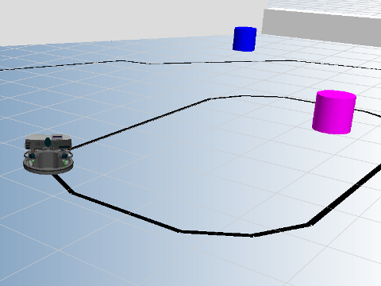
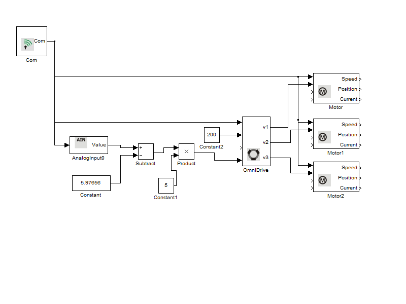

AnalogInput Example
This example illustrates the use of the Analog Inputs on Robotino. Robotino can be equipped with inductive sensors which can then detect a metallic line on the floor and follow it.
Contents

Blocks used in this example
Description
The inductive sensors are connected to two of the analog inputs 0 (AIN1) and 1 (AIN2). Inductive sensor 0 is located on the front of robot and inductive sensor 1 is located at the center of the robot. We receive readings from inductive sensor 0. If the sensor is directly above the black metallic line, then a reading of 2.00195 is read and if the sensor is not above a metallic line, then a reading of 9.95117 is received.
Once the reading is received, it is subtracted by 5.97656 (average of 2.00195 and 9.95117) and then multiplied by a scaling factor of 5. The end result is then set as input for the Omega value for the OmniDrive_setVelocity function. A constant speed of 200 mm/s in the X direction is also set. This ensures that the robot is always following the line and rotates in the direction of the line.
